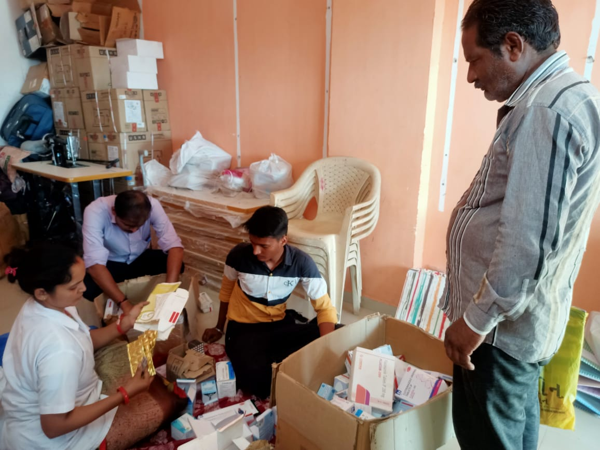

Medical supplies at Narol OPD · January 2024Weekly medical OPDs
Doctors provide consultations, routine health checks and guidance on managing long-term health conditions. Medicines are provided as prescribed through the programme.
1,895OPD visits in Q2
Learn more →